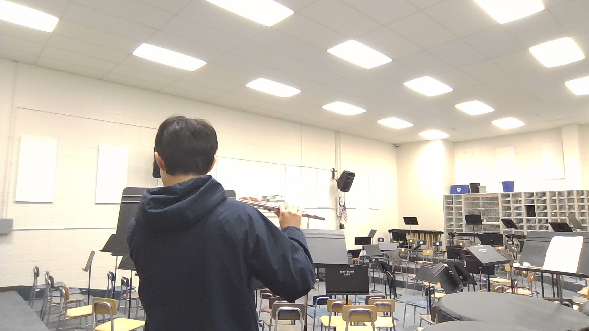
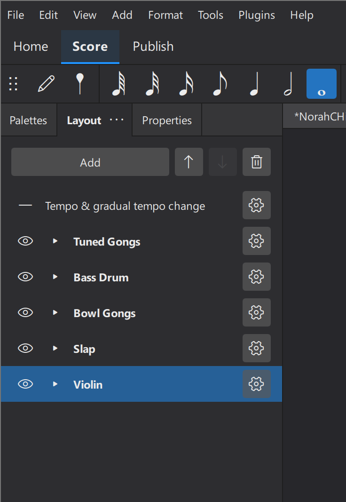
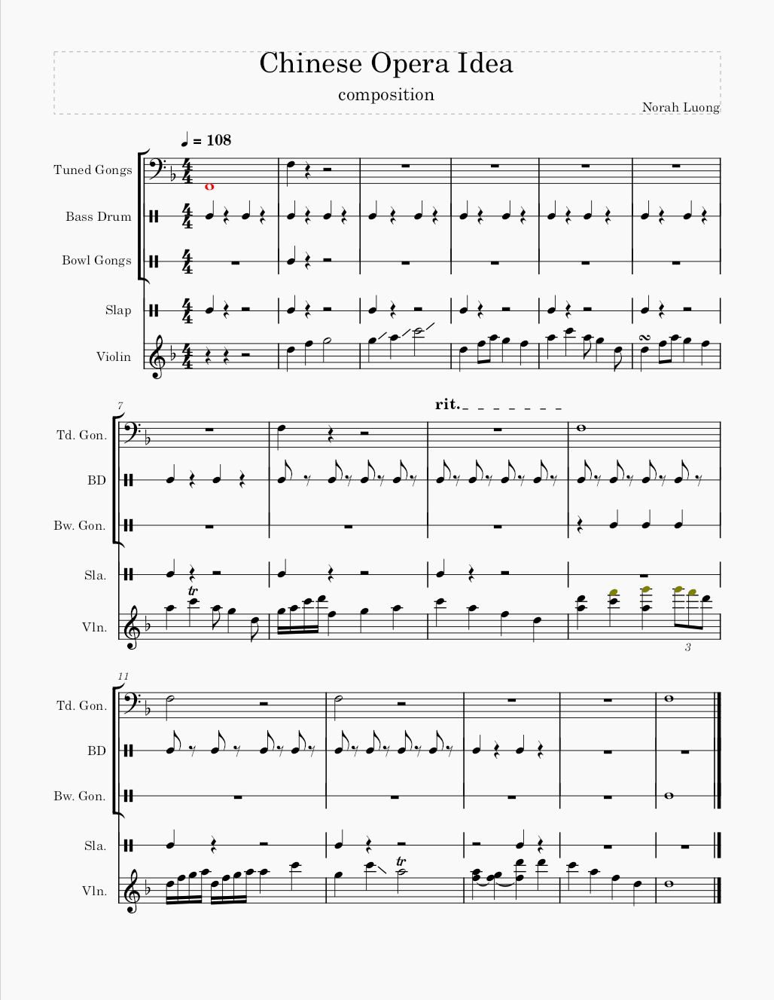

[Image: Recording Setup in Studio]

[Image: Recording Setup in Studio]
[Image: MuseScore Interface with Instruments]

[Image: Final MuseScore Composition Screenshot]

/*
Add this to css/styles.css after the .image-placeholder section
(around line 350)
*/
.process-image {
margin: var(--spacing-md) 0;
border-radius: 8px;
overflow: hidden;
box-shadow: 0 4px 15px rgba(0, 0, 0, 0.1);
}
.process-image img {
width: 100%;
height: auto;
display: block;
border-radius: 8px;
transition: transform var(--transition-medium);
}
.process-image img:hover {
transform: scale(1.02);
}